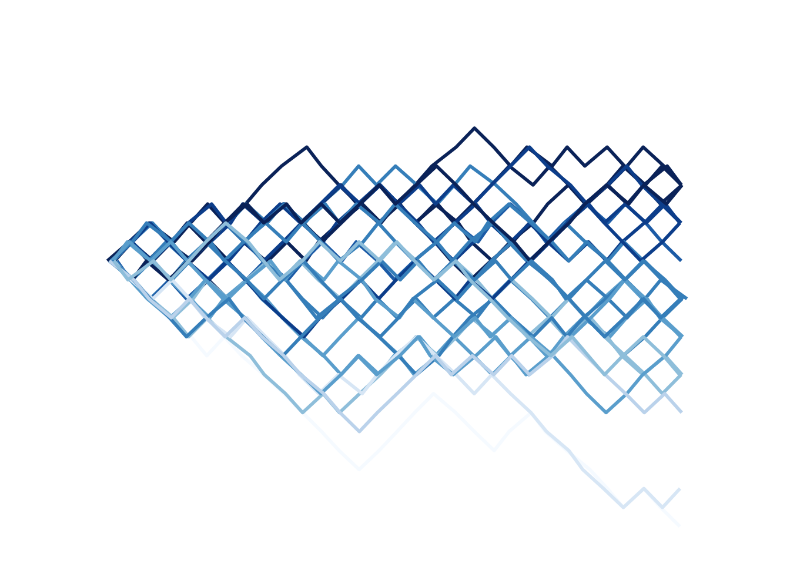
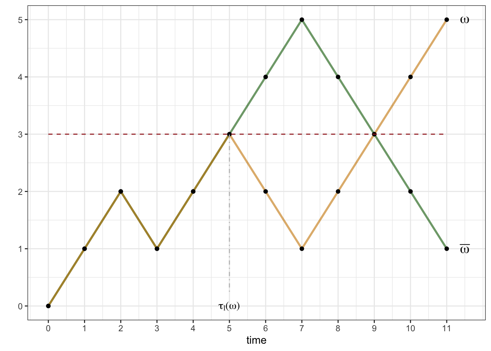

Chapter 3 Random Walks
3.1 What are stochastic processes?
A stochastic process is a sequence - finite or infinite - of random variables. We usually write \(\{X_n\}_{n\in{\mathbb{N}}_0}\) or \(\{X_n\}_{0\leq n \leq T}\), depending on whether we are talking about an infinite or a finite sequence. The number \(T\in {\mathbb{N}}_0\) is called the time horizon, and we sometimes set \(T=+\infty\) when the sequence is infinite. The index \(n\) is often interpreted as time, so that a stochastic process can be thought of as a model of a random process evolving in time. The initial value of the index \(n\) is often normalized to \(0\), even though other values may be used. This it usually very clear from the context.
It is important that all the random variables \(X_0, X_1,\dots\) “live” on the same sample space \(\Omega\). This way, we can talk about the notion of a trajectory or a sample path of a stochastic process: it is, simply, the sequence of numbers \[X_0(\omega), X_1(\omega), \dots\] but with \(\omega\in \Omega\) considered “fixed”. In other words, we can think of a stochastic process as a random variable whose value is not a number, but sequence of numbers. This will become much clearer once we introduce enough examples.
3.2 The Simple Symmetric Random Walk
A stochastic process \(\{X\}_{n\in{\mathbb{N}}_0}\) is said to be a simple symmetric random walk (SSRW) if
\(X_0=0\),
the random variables \(\delta_1 = X_1-X_0\), \(\delta_2 = X_2 - X_1\), …, called the steps of the random walk, are independent
each \(\delta_n\) has a coin-toss distribution, i.e., its distribution is given by \[{\mathbb{P}}[ \delta_n = 1] = {\mathbb{P}}[ \delta_n=-1] = \tfrac{1}{2} \text{ for each } n.\]
Some comments:
This definition captures the main features of an idealized notion of a particle that gets shoved, randomly, in one of two possible directions, over and over. In other words, these “shoves” force the particle to take a step, and steps are modeled by the random variables variables \(\delta_1,\delta_2, \dots\). The position of the particle after \(n\) steps is \(X_n\); indeed, \[X_n = \delta_1 + \delta_2 + \dots + \delta_n \text{ for }n\in {\mathbb{N}}.\] It is important to assume that any two steps are independent of each other - the most important properties of random walks depend on this in a critical way.
Sometimes, we only need a finite number of steps of a random walk, so we only care about the random variables \(X_0, X_1,\dots, X_T\). This stochastic process (now with a finite time horizon \(T\)) will also be called a random walk. If we want to stress that the horizon is not infinite, we sometimes call it the finite-horizon random walk. Whether \(T\) is finite or infinite is usually clear from the context.
The starting point \(X_0=0\) is just a normalization. Sometimes we need more flexibility and allow our process to start at \(X_0=x\) for some \(x\in {\mathbb{N}}\). To stress that fact, we talk about the random walk starting at \(x\). If no starting point is mentioned, you should assume \(X_0=0\).
We will talk about biased (or asymmetric) random walks a bit later. The only difference will be that the probabilities of each \(\delta_n\) taking values \(1\) or \(-1\) will be \(p\in (0,1)\) and \(1-p\), and not necessarily \(\tfrac{1}{2}\), The probability \(p\) cannot change from step to step and the steps \(\delta_1, \delta_2, \dots\) will continue to be independent from each other.
The word simple in its name refers to the fact that distribution of every step is a coin toss. You can easily imagine a more complicated mechanism that would govern each step. For example, not only the direction, but also the size of the step could be random. In fact, any distribution you can think of can be used as a step distribution of a random walk. Unfortunately, we will have very little to say about such, general, random walks in these notes.
3.3 How to simulate random walks
In addition to being quite simple conceptually, random walks are also easy to simulate. The fact that the steps \(\delta_n = X_n - X_{n-1}\) are independent coin tosses immediately suggests a feasible strategy: simulate \(T\) independent coin tosses first, and then define each \(X_n\) as the sum of the first \(n\) tosses.
Before we implement this idea in R, let us agree on a few conventions which we will use whenever we simulate a stochastic process:
- the result of each simulation is a
data.frameobject - its columns will be the random variables \(X_0\), \(X_1\), It is a good
idea to name your columns
X0,X1,X2, etc. - each row will represent one “draw”˜ ˜µ This is best achieved by the following two-stage approach in R:
write a function which will simulate a single trajectory of your process, If your process comes with parameters, it is a good idea to include them as arguments to this function.
use the function
replicateto stack together many such simulations and convert the result to adata.frame. Don’t forget to transpose first (use the functiont) becausereplicateworks column by column, and not row by row.
Let’s implement this in the case of a simple random walk. Of course, it is
impossible to simulate a random walk on an infinite horizon (\(T=\infty\))
so we must restrict to finite-horizon random walks1. The function cumsum which
produces partial sums of its input comes in very handy.
single_trajectory = function(T, p = 0.5) {
delta = sample(c(-1, 1), size = T, replace = TRUE, prob = c(1 - p, p))
x = cumsum(delta)
return(x)
}Next, we run the same function nsim times and record the results. It is a
lucky break that the default names given to columns are X1, X2, … so we
don’t have to rename them. We do have to add the zero-th column \(X_0=0\) because,
formally speaking, the “random variable” \(X_0=0\) is a part of the stochastic
process. This needs to be done before other columns are added to maintain the
proper order of columns, which is important when you want to plot trajectories.
3.4 Two ways of looking at a stochastic proceses
Now that we have the data frame walk, we can explore in at least two qualitatively different ways:
3.4.1 Column-wise (distributionally)
Here we focus on individual random variables (column) or pairs, triplets, etc. of random variables and study their (joint) distributions. For example, we can plot histograms of the random variables \(X_5, X_8, X_{30}\) or \(X_{500}\):

We can also use various (graphical or not) devices to understand joint distributions of pairs of random variables:

3.4.2 Row-wise (trajectorially or path-wise)
If we focus on what is going on in a given row of walk, we are going to see
a different cross-section of our stochastic process. This way we are fixing the
state of the world \(\omega\) (represented by a row of walk), i.e., the particular
realization of our process, but
varying the time parameter. A typical picture associated to a trajectory
of a random walk is the following

You can try to combine the two approaches (if you must) and plot several trajectories on the same plot. While this produces pretty pictures (and has one or two genuine applications), it usually leads to a sensory overload. Note that the trajectories below are jittered a bit. That means that the positions of the points are randomly shifted by a small amount. This allows us to see features of the plot that would otherwise be hidden because of the overlap.

3.5 The path space
The row-wise (or path-wise or trajectory-wise) view of the random walk described above illustrates a very important point: the random walk (and random processes in general) can be seen as random “variable” whose values are not merely numbers; they are sequences of numbers (trajectories). In other words, a random process is simply a “random trajectory”. We can simulate this random trajectory as we did above, but simulating the steps and adding them up, but we could also take a different approach. We could build the set of all possible trajectories, and then pick a random trajectory out of it.
For a random walk on a finite horizon \(T\), a trajectory is simply a sequence of natural numbers starting from \(0\). Different realizations of the coin-tosses \(\delta_n\) will lead to different trajectories, but not every sequence of natural numbers corresponds to a trajectory. For example \((0,3,4,5)\) is not possible because the increments of the random walk can only take values \(1\) or \(-1\). In fact, a finite sequence \((x_0, x_1, \dots, x_T)\) is a (possible) sample path of a random walk if and only if \(x_0=0\) and \(x_{k}-x_{k-1} \in \{-1,1\}\) for each \(k\). For example, when \(T=3\), there are \(8\) possible trajectories: \[ \begin{align} \Omega = \{ &(0,1,2,3), (0,1,2,1),(0,1,0,2), (0,1,0,-1), \\ & (0,-1,-2,-3), (0,-1,-2,-1), (0,-1,0,-2), (0,-1,0,1)\} \end{align}\] When you (mentally) picture them, think of their graphs:

Each trajectory corresponds to a particular combinations of the values of the
increments \((\delta_1,\dots, \delta_T)\), each such combination happens with probability \(2^{-T}\).
This means that any two trajectories are equally likely. That is convenient, because
this puts uniform probability on the collection of trajectories. We are now ready to
implement our simulation procedure in R; let us write the function single_trajectory using this
approach and use it to simulate a few trajectories. We assume that a function all_paths(T) which returns
a list of all possible paths with horizon \(T\) has already been implemented (more info about a possible
implementation in R is given in a problem below):
3.6 The distribution of \(X_n\)
Building a path space is not simply an exercise in abstraction. Here is how we can use is to understand the distribution of the position of the random walk:
Let \(X\) be a simple symmetric random walk with time horizon \(T=5\). What is the probability that \(X_{5}=1\)?
Let \(\Omega\) be the path space, i.e., the set of all possible trajectories of length \(5\) - there are \(2^{5}=32\) of them. The probability that \(X_{5}=1\) is the probability that a randomly picked path from \(\Omega\) will take the value \(1\) at \(n=5\). Since all paths are equally likely, we need to count the number of paths with value \(1\) at \(n=5\) and then divide by the total number of paths, i.e., \(32\).
So, how many paths are there that take value \(1\) at \(n=5\)? Each path is built out of steps of absolute value \(1\). Some of them go up (call them up-steps) and some of them go down (down-steps). A moment’s though reveals that the only way to reach \(1\) in \(5\) steps is if you have exactly \(3\) up-steps and \(2\) down-steps. Conversely, any path that has \(3\) up-steps and \(2\) down-steps ends at \(1\).
This realization transforms the problem into the following: how many paths are there with exactly \(3\) up-steps (note that we don’t have to specify that there are \(2\) down-steps - it will happen automatically). The only difference between different paths with exactly \(3\) up-steps is the position of these up-steps. In some of them the up-steps happen right at the start, in some at the very end, and in some they are scattered around. Each path with \(3\) up-steps is uniquely determined by the list of positions of those up-steps, i.e., with a size-\(3\) subset of \(\{1,2,3,4,5\}\). This is not a surprise at all, since each path is build out of increments, and positions of positive increments clearly determine values of all increments.
The problem has now become purely mathematical: how many size-\(3\) subsets of \(\{1,2,3,4,5\}\) are there? The answer comes in the form of a binomial coefficient \(\binom{5}{3}\) whose value is \(10\) - there are exactly ten ways to pick three positions out of five. Therefore, \[ {\mathbb{P}}[ X_{5} = 1] = 10 \times 2^{-5} = \frac{5}{16}.\]
Can we do this in general?
Let \(X\) be a simple symmetric random walk with time horizon \(T\). What is the probability that \(X_{n}=k\)?
The reasoning from the last example still applies. A trajectory with \(u\) up-steps and \(d\) down-steps will end at \(u-d\), so we must have \(u-d=k\). On the other hand \(u+d=n\) since all steps that are not up-steps are necessarily down-steps. This gives as a simple linear system with two equations and two unknowns which solves to \(u = (n+k)/2\), \(d=(n-k)/2\). Note the \(n\) and \(k\) must have the same parity for this solution to be meaningful. Also, \(k\) must be between \(-n\) and \(n\).
Having figured out how many up-steps is necessary to reach \(k\), all we need to do is count the number of trajectories with that many up-steps. Like before, we can do that by counting the number of ways we can choose their position among \(n\) steps, and, like before, the answer is the binomial coefficient \(\binom{n}{u}\) where \(u=(n+k)/2\). Dividing by the total number of trajectories gives us the final answer: \[ {\mathbb{P}}[ X_n = k ] = \binom{n}{ (n+k)/2} 2^{-n},\] for all \(k\) between \(-n\) and \(n\) with same parity as \(n\). For all other \(k\), the probability is \(0\).
The binomial coefficient and the \(n\)-th power suggest that the distribution of \(X_n\) might have something to do with the binomial distribution. It is clearly not the binomial, since it can take negative values, but it is related. To figure out what is going on, let us first remember what the binomial distribution is all about. Formally, it is a discrete distribution with two parameters \(n\in{\mathbb{N}}\) and \(p\in (0,1)\). Its support is \(\{0,1,2,\dots, n\}\) and the distribution is given by the following table, where \(q=1-p\)
| 0 | 1 | 2 | … | k | … | n |
|---|---|---|---|---|---|---|
| \(\binom{n}{0} q^n\) | \(\binom{n}{1} p q^{n-1}\) | \(\binom{n}{2} p^2 q^{n-2}\) | … | \(\binom{n}{k} p^k q^{n-k}\) | … | \(\binom{n}{n} p^n\) |
The binomial distribution is best understood, however, when it is expressed as a “number of successes”. More precisely,
If \(B_1,B_2,\dots, B_n\) are \(n\) independent Bernoulli random variables with the same parameter \(p\), then their sum \(B_1+\dots+B_n\) has a binomial distribution with parameters \(n\) and \(p\).
We think of \(B_1, \dots, B_n\) as indicator random variables of “successes” in \(n\) independent “experiments” each of which “succeeds” with probability \(p\). A canonical example is tossing a biased coin \(n\) times and counting the number of “heads”.
We know that the position \(X_n\) at time \(n\) of the random walk admits the representation \[ X_n = \delta_1+\delta_2+\dots+\delta_n,\] just like the binomial random variable. The distribution of \(\delta_k\) is not Bernoulli, though, since it takes the values \(-1\) and \(1\), and not \(0,1\). This is easily fixed by applying the linear transformation \(x\mapsto \frac{1}{2}(x+1)\); indeed \(( -1 +1)/2 = 0\) and \(( 1 + 1) / 2 =1\), and, so, \[ \frac{1}{2}(\delta_k+1)\text{ is a Bernoulli random variable with parameter } p=\frac{1}{2}.\] Consequently, if we add all \(B_k = \tfrac{1}{2}(1+\delta_k)\) and remember our discussion from above we get the following statement
In a simple symmetric random walk the random variable \(\frac{1}{2} (n + X_n)\) has the binomial distribution with parameters \(n\) and \(p=1/2\), for each \(n\).
Can you use that fact to rederive the distribution of \(X_n\)?
3.7 Biased random walks
If the steps of the random walk preferred one direction to the other, the definition would need to be tweaked a little bit and the word “symmetric” in the name gets replaced by “biased” (or “asymmetric”):
A stochastic process \(\{X\}_{n\in{\mathbb{N}}_0}\) is said to be a **simple biased random walk with parameter \(p\in (0,1)\) if
\(X_0=0\),
the random variables \(\delta_1 = X_1-X_0\), \(\delta_2 = X_2 - X_1\), …, called the steps of the random walk, are independent and
each \(\delta_n\) has a biased coin-toss distribution, i.e., its distribution is given by \[{\mathbb{P}}[ \delta_n = 1] = p \text{ and } {\mathbb{P}}[ \delta_n=-1] = 1-p \text{ for each } n.\]
As far as the distribution of \(X_n\) is concerned, we don’t expect it to be the same as in the symmetric case. After all, the biased random walk (think \(p=0.999\)) will prefer one direction over the other. Our trick with writing \(\frac{1}{2}(n+X_n)\) as a sum of Bernoulli random variables still works. We just have to remember that \(p\) is not \(\frac{1}{2}\) anymore to conclude that \(\tfrac{1}{2}(X_n + n)\) has the binomial distribution with parameters \(n\) and \(p\); if we put \(u = (n+k)/2\) we get \[\begin{align} {\mathbb{P}}[ X_n = k] &= {\mathbb{P}}[ \tfrac{1}{2}(X_n+n) = u] = \binom{n}{u} p^u q^{n-u}\\ & = \binom{n}{\frac{1}{2}(n+k)} p^{\frac{1}{2}(n+k)} q^{\frac{1}{2}(n-k)}. \end{align}\] Note that be binomial coefficient stays the same as in the symmetric case, but the factor \(2^{-n} = (1/2)^{\frac{1}{2}(n+k)} (1/2)^{\frac{1}{2}(n-k)}\) becomes \(p^{\frac{1}{2}(n+k)} q^{\frac{1}{2}(n-k)}\).
Can we reuse the sample space \(\Omega\) to build a biased random walk? Yes, we can, but we need to assign possibly different probabilities to individuals. Indeed, if \(p=0.99\), the probability that all the increments \(\delta\) of a \(10\)-step random walk take the value \(+1\) is \((0.99)^{10} \approx 0.90\). This is much larger than the probability that all steps take the value \(-1\), which is \((0.01)^{10}= 10^{-20}\).
In general, the probability that a particular path is picked out of \(\Omega\) will depend on the number of up-steps and down-steps; more precisely it equals \(p^u q^{n-u}\) where \(u\) is the number of up-steps. The interesting thing is that the number of up-steps \(u\) depends only on the final position \(x_n\) of the path; indeed \(u = \frac{1}{2}(n+x_n)\). This way, all paths of length \(T=5\) that end up at \(1\) get the same probability of being chosen, namely \(p^3 q^2\). Let us use the awful seizure-inducing graph with multiple paths for good, and adjust the each path according to its probability; some jitter has been added to deal with overlap. The lighter-colored paths are less likely to happen then the darker-colored paths.

3.8 The reflection principle
Counting trajectories in order to compute probabilities is a powerful method, as our next example shows. It also reveals a potential weakness of the combinatorial approach: it works best when all \(\omega\) are equally likely (i.e., when \(p=\tfrac{1}{2}\) in the case of the random walk).
We start by asking a simple question; what is the typical record value of the random walk, i.e., how far “up” (or “right” depending on your point of view) does it typically get? Clearly, the largest value it can attain is \(T\). This happens only when all coin tosses came up \(+1\), an extremely unlikely event - its probability is \(2^{-T}\). On the other hand, this maximal value is at least \(0\), since \(X_0=0\), already. A bit of thought reveals that any value between those two extremes is possible, but it is not at all easy to compute their probabilities.
More precisely, if \(\{X_n\}\) is a simple random walk with time horizon
\(T\). We define its running-maximum process \(\{M_n\}_{n\in {\mathbb{N}}_0}\) by
\[M_n=\max(X_0,\dots, X_n),\ \text{ for }0 \leq n \leq T,\]
and ask what the probabilities \({\mathbb{P}}[M_n = k]\) for \(k=0,\dots, n\) are?
An easy numerical solution to this problem can given by simulation. We reuse the function
simulate_walk defined at the beginning of the chapter, but also employ a new function, called apply which “applies” a function to each row (or column) of a data frame or a matrix. It seems to be tailor-made for our purpose2 because we want to compute the maximum of each row of the simulation matrix (remember - the row means keep the realization fixed, but vary the time-index \(n\)). The syntax of apply is simple - it needs the data frame, the margin (rows are coded as 1 and columns as 2) and the function to be applied (max in our case). The output is a vector of size nsim with all row-wise maxima:
walk = simulate_walk(nsim = 100000, T = 12, p = 0.5)
M = apply(walk, 1, max)
hist(M, breaks = seq(-0.5, 12.5, 1), probability = TRUE)The overall shape of the distribution is as we expected; the support is \(\{0,1,2,\dots, 12\}\) and the probabilities tend to decrease as \(k\) gets larger. The unexpected feature is that \({\mathbb{P}}[ M_{12} = 1]\) seems to be the same as \({\mathbb{P}}[ M_{12} = 2]\). It drops after that for \(k=3\), but it looks like \({\mathbb{P}}[ M_{12} = 3] = {\mathbb{P}}[ M_{12}=4]\) again. Somehow the probability does not seem to change at all from \(2i-1\) to \(2i\).
Fortunately, there is an explicit formula for the distribution of \(M_n\) and we can derive it by a nice counting trick known as the reflection principle.
As usual, we may assume without loss of generality that \(n=T\) since the values of \(\delta_{n+1}, \dots, \delta_T\) do not affect \(M_n\) at all. We start by picking a level \(l\in\{1,\dots, n\}\) and first compute the probability \({\mathbb{P}}[M_n\geq l]\) - it will turn out to be easier than attacking \({\mathbb{P}}[ M_n=l]\) directly. The symmetry assumption \(p=1/2\) ensures that all trajectories are equally likely, so we can do this by counting the number of trajectories whose maximal level reached is at least \(l\), and then multiply by \(2^{-n}\).
What makes the computation of \({\mathbb{P}}[M_n \geq l]\) a bit easier than that of \({\mathbb{P}}[ M_n = l]\) is the following equivalence
\[M_n\geq l \text{ if and only if } X_k=l \text{ for some } k.\]
In words, the set of trajectories whose maximum is at least \(l\) is exactly the same as the set of trajectories that hit the level \(l\) at some time. Let us denote the set of trajectories \(\omega\) with this property by \(A_l\), so that \({\mathbb{P}}[ M_n \geq l] = {\mathbb{P}}[A_l]\). We can further split \(A_l\) into three disjoint events \(A_l^{>}\), \(A_l^{=}\) and \(A_l^{<}\), depending on whether \(X_n<l\), \(X_n=l\) or \(X_n>l\). In the picture below, the red trajectory is in \(A_l^{>}\), the green trajectory in \(A_l^=\) the orange one in \(A_l^{<}\), while the blue one is not in \(A_l\) at all.

With the set of all trajectories \(\Omega\) partitioned into four disjoint classes, namely \(A^>_l, A^=_l, A^<_l\) and \((A_l)^c\), we are ready to reveal the main idea behind the reflection principle:
To see why that is true, start by choosing a trajectory \(\omega\in A_l^{>}\) and denoting by \(\tau_l(\omega)\) the first time \(\omega\) visits the level \(l\). Since \(\omega \in A^>\) such a time clearly exists. Then we associate to \(\omega\) another trajectory, call it \(\bar{\omega}\), obtained from \(\omega\) in the following way:
- \(\bar{\omega}\) and \(\omega\) are the same until the time \(\tau_l(\omega)\).
- After that, \(\bar{\omega}\) is the reflection of \(\omega\) around the level \(l\).
Equivalently the increments of \(\omega\) and \(\bar{\omega}\) are exactly the same up to time \(\tau(\omega)\), and exactly the opposite afterwards. In the picture below - the orange trajectory is \(\omega\) and the green trajectory is its “reflection” \(\bar{\omega}\); note that they overlap until time \(5\):

Convince yourself that this procedure establishes a bijection between the sets \(A_l^{>}\) and \(A_l^{<}\), making these two sets equal in size.
So why is it important to know that \(\# A_l^> = \# A_l^<\)? Because the trajectories in
\(A_l^>\) (as well as in \(A_l^=\)) are easy to count.
For them, the requirement that the level
\(l\) is hit at a certain point is redundant; if you are at or above \(l\)
at the very end, you must have hit \(l\) at a certain point.
Therefore, \(A_l^{>}\) is simply the family of those trajectories
\(\omega\) whose final positions \(X_n(\omega)\) are somewhere strictly above \(l\). Hence,
\[\begin{align}
{\mathbb{P}}[A_l^{>}] &= {\mathbb{P}}[ X_n=l+1 \text{ or } X_n = l+2 \text{ or } \dots \text{ or }
X_n=n]\\ & = \sum_{k=l+1}^n {\mathbb{P}}[X_n = k]
\end{align}\]
Similarly, \[\begin{aligned} {\mathbb{P}}[ A_l^{=}] = {\mathbb{P}}[X_n=l].\end{aligned}\] Finally, by the reflection principle, \[\begin{aligned} {\mathbb{P}}[ A_l^{<}] = {\mathbb{P}}[A_l^{>}] = \sum_{k=l+1}^n {\mathbb{P}}[X_n=k].\end{aligned}\]
Putting all of this together, we get \[\begin{aligned} {\mathbb{P}}[ A_l ] = {\mathbb{P}}[ X_n=l] + 2 \sum_{k=l+1}^n {\mathbb{P}}[X_n=k],\end{aligned}\] so that \[\begin{aligned} {\mathbb{P}}[ M_n = l ] &= {\mathbb{P}}[ M_n \geq l] - {\mathbb{P}}[ M_n \geq l+1]\\ & = {\mathbb{P}} [A_l] - {\mathbb{P}} [A_{l+1}]\\ & = {\mathbb{P}}[ X_n = l] + 2 {\mathbb{P}}[X_n = l+1] + 2{\mathbb{P}}[X_n = l+2]+ \dots + 2{\mathbb{P}}[ X_n=n] -\\ & \qquad \qquad \quad \ - {\mathbb{P}}[ X_n = l+1] - 2 {\mathbb{P}}[X_n = l+2] - \dots - 2{\mathbb{P}}[ X_n=n]\\ &= {\mathbb{P}}[ X_n=l] + {\mathbb{P}}[X_n=l+1] \end{aligned}\]
Now that we have the explicit expression \[ {\mathbb{P}}[ M_n = l ] = {\mathbb{P}}[ X_n=l] + {\mathbb{P}}[X_n = l+1] \text{ for } l=0,1,\dots, n,\] we can shed some light on the fact on the shape of the histogram for \(M_n\) we plotted above. Since \({\mathbb{P}}[X_n=l]\) is \(0\) if \(n\) and \(l\) don’t have the same parity, it is clear that only one of the probabilities \({\mathbb{P}}[X_n=l]\) and \({\mathbb{P}}[X_n=l+1]\) can be positive. It follows that, for \(n\) even, we have \[\begin{align} {\mathbb{P}}[ M_n =0] &= {\mathbb{P}}[X_n=0] + {\mathbb{P}}[X_n=1] = {\mathbb{P}}[X_n=0]\\ {\mathbb{P}}[M_n=1] &= {\mathbb{P}}[ X_n=1] + {\mathbb{P}}[X_n=2] = {\mathbb{P}}[X_n=2]\\ {\mathbb{P}}[M_n=2] &= {\mathbb{P}}[ X_n=2] + {\mathbb{P}}[X_n=3] = {\mathbb{P}}[X_n=2]\\ {\mathbb{P}}[M_n=3] &= {\mathbb{P}}[ X_n=3] + {\mathbb{P}}[X_n=4] = {\mathbb{P}}[X_n=4]\\ {\mathbb{P}}[M_n=4] &= {\mathbb{P}}[ X_n=4] + {\mathbb{P}}[X_n=5] = {\mathbb{P}}[X_n=4] \text{ etc.} \end{align}\] In a similar way, for \(n\) odd, we have \[\begin{align} {\mathbb{P}}[ M_n =0] &= {\mathbb{P}}[X_n=0] + {\mathbb{P}}[X_n=1] = {\mathbb{P}}[X_n=1]\\ {\mathbb{P}}[M_n=1] &= {\mathbb{P}}[ X_n=1] + {\mathbb{P}}[X_n=2] = {\mathbb{P}}[X_n=1]\\ {\mathbb{P}}[M_n=2] &= {\mathbb{P}}[ X_n=2] + {\mathbb{P}}[X_n=3] = {\mathbb{P}}[X_n=3]\\ {\mathbb{P}}[M_n=3] &= {\mathbb{P}}[ X_n=3] + {\mathbb{P}}[X_n=4] = {\mathbb{P}}[X_n=3]\\ {\mathbb{P}}[M_n=4] &= {\mathbb{P}}[ X_n=4] + {\mathbb{P}}[X_n=5] = {\mathbb{P}}[X_n=5] \text{ etc.} \end{align}\]
Here is a example of a typical problem where the reflection principle (i.e., the formula for \({\mathbb{P}}[M_n=k]\)) is used:
Let \(X\) be a simple symmetric random walk. What is the probability that \(X_n\leq 0\) for all \(0\leq n \leq T\)?
This is really a question about the maximum, but in disguise. The walk will stay negative or \(0\) if and only if its its running maximum \(M_T\) at time \(T\) takes the value \(0\). By our formula for \({\mathbb{P}}[M_n=l]\) we have \[ {\mathbb{P}}[M_T=0] = {\mathbb{P}}[X_T=0] + {\mathbb{P}}[X_T = 1].\] When \(T=2N\) is even this evaluates to \(\binom{2N}{N} 2^{-2N}\), and when \(T=2N-1\) to \(\binom{2N-1}{N} 2^{-(2N-1)}\).
What is the probability that a simple symmetric random walk will reach the level \(l=1\) in \(T\) steps or fewer? What happens when \(T\to\infty\)?
The first question is exactly the opposite of the question in our previous example, so the answer is \[ 1 - {\mathbb{P}}[M_T=0] = 1- {\mathbb{P}}[X_T=0] - {\mathbb{P}}[X_T=1].\] As above, this evaluates to \(\binom{2N}{N} 2^{-2N}\) when \(T=2N\) is even (we skip the case of odd \(T\) because it is very similar). When \(N\to\infty\), we expect \(\binom{2N}{N}\) to go to \(+\infty\) and \(2^{-2N}\) to go to \(0\), so it is not immediately clear which term will win. One way to make a guess is to think about it probabilistically: we are looking at the probability \({\mathbb{P}}[X_{2N}=0]\) that the random walk takes the value \(0\) after exactly \(2N\) steps. Even though no other (single) value is more likely to happen, there are so many other values \(X_{2N}\) could take (anything from \(-2N\) to \(2N\) except for \(0\)) that we conjecture that its probability converges to \(0\). A formal mathematical argument which proves that our conjecture is, indeed correct, involves Stirling’s formula:
\[ N! \sim \sqrt{2 \pi N} \left( \frac{N}{e} \right)^N \text{ where } A_N \sim B_N \text{ means that } \lim_{N\to\infty} \frac{A_N}{B_N}=1. \]
We write \(\binom{2N}{N} = \tfrac{(2N)!}{N! N!}\) and apply Stirling’s formula to each factorial (let’s skip the details) to conclude that \[ \binom{2N}{N} 2^{-2n}\sim \frac{1}{\sqrt{N \pi}} \text{ so that } \lim_{N\to\infty} \binom{2N}{N} 2^{-2n} = 0 \]
The result of the previous problem implies the following important fact:
The simple symmetric random walk will reach the level \(1\), with certainty, given enough time.
Indeed, we just proved that the probability of this not happening during the first \(T\) steps shrinks down to \(0\) as \(T\to\infty\).
But wait, there is more! By symmetry, the level \(1\) can be replaced by \(-1\). Also, once we hit \(1\), the random walk “renews itself” (this property is called the Strong Markov Property and we will talk about it later), so it will eventually hit the level \(2\), as well. Continuing the same way, we get the following remarkable result
Sooner or later, the symple symmetric random walk will visit any level.
We close this chapter with an application of the reflection principle to a classical problem in probability and combinatorics. Feel free to skip it if you want to.
Suppose that two candidates, Daisy and Oscar, are running for office, and \(T \in{\mathbb{N}}\) voters cast their ballots. Votes are counted the old-fashioned way, namely by the same official, one by one, until all \(T\) of them have been processed. After each ballot is opened, the official records the number of votes each candidate has received so far. At the end, the official announces that Daisy has won by a margin of \(k>0\) votes, i.e., that Daisy got \((T+k)/2\) votes and Oscar the remaining \((T-k)/2\) votes. What is the probability that at no time during the counting has Oscar been in the lead?
We assume that the order in which the official counts the votes is completely independent of the actual votes, and that each voter chooses Daisy with probability \(p\in (0,1)\) and Oscar with probability \(q=1-p\). We don’t know a-priori what \(p\) is, and, as it turns out, we don’t need to!
For \(0 \leq n \leq T\), let \(X_n\) be the number of votes received by Daisy minus the number of votes received by Oscar in the first \(n\) ballots. When the \(n+1\)-st vote is counted, \(X_n\) either increases by \(1\) (if the vote was for Daisy), or decreases by 1 otherwise. The votes are independent of each other and \(X_0=0\), so \(X_n\), \(0\leq n \leq T\) is a simple random walk with the time horizon \(T\). The probability of an up-step is \(p\in (0,1)\), so this random walk is not necessarily symmetric. The ballot problem can now be restated as follows:
For a simple random walk \(\{X_n\}_{0\leq n \leq T}\), what is the probability that \(X_n\geq 0\) for all \(n\) with \(0\leq n \leq T\), given that \(X_T=k\)?
The first step towards understanding the solution is the realization that the exact value of \(p\) does not matter. Indeed, we are interested in the conditional probability \({\mathbb{P}}[ F|G]={\mathbb{P}}[F\cap G]/{\mathbb{P}}[G]\), where \(F\) denotes the set of \(\omega\) whose corresponding trajectories always stay non-negative, while the trajectories corresponding to \(\omega\in G\) reach \(k\) at time \(n\). Each \(\omega \in G\) consists of exactly \((T+k)/2\) up-steps (\(1\)s) and \((T-k)/2\) down steps (\(-1\)s), so its probability weight is equal to \(p^{ (T+k)/2} q^{(T-k)/2}\). Therefore, with \(\# A\) denoting the number of elements in the set \(A\), we get \[\begin{aligned} {\mathbb{P}}[ F|G]=\frac{{\mathbb{P}}[F\cap G]}{{\mathbb{P}}[G]}=\frac{\# (F\cap G) \ p^{ (T+k)/2} q^{(T-k)/2}}{ \# G \ p^{ (T+k)/2} q^{(T-k)/2}}=\frac{\#(F\cap G)}{\# G}.\end{aligned}\] This is quite amazing in and of itself. This conditional probability does not depend on \(p\) at all!
Since we already know how to count the number of elements in \(G\) (there are \(\binom{T}{(T+k)/2}\)), “all” that remains to be done is to count the number of elements in \(G\cap F\). The elements in \(G \cap F\) form a portion of all the elements in \(G\) whose trajectories don’t hit the level \(l=-1\); this way, \(\#(G\cap F)=\#G-\#H\), where \(H\) is the set of all paths which finish at \(k\), but cross (or, at least, touch) the level \(l=-1\) in the process. Can we use the reflection principle to find \(\# H\)? Yes, we can. In fact, you can convince yourself that the reflection of any trajectory corresponding to \(\omega \in H\) around the level \(l=-1\) after its last hitting time of that level produces a trajectory that starts at \(0\) and ends at \(-k-2\), and vice versa. The number of paths from \(0\) to \(-k-2\) is easy to count - it is equal to \(\binom{T}{(T+k)/2+1}\). Putting everything together, we get \[{\mathbb{P}}[ F|G]=\frac{\binom{T}{n_1}-\binom{T}{n_1+1}} {\binom{T}{n_1}}=\frac{k+1}{n_1+1},\text{ where }n_1=\frac{T+k}{2}.\] The last equality follows from the definition of binomial coefficients \(\binom{T}{i}=\frac{T!}{i!(T-i)!}\).
The Ballot problem has a long history (going back to at least 1887) and has spurred a lot of research in combinatorics and probability. In fact, people still write research papers on some of its generalizations. When posed outside the context of probability, it is often phrased as “in how many ways can the counting be performed …” (the difference being only in the normalizing factor \(\binom{T}{n_1}\) appearing in Example above). A special case \(k=0\) seems to be even more popular - the number of \(2n\)-step paths from \(0\) to \(0\) never going below zero is called the \(n\)-th Catalan number and equals \[\begin{align} C_n=\frac{1}{n+1} \binom{2n}{n}. \end{align}\]
3.9 Additional problems for Chapter 3
Let \(\{X_n\}_{n\in {\mathbb{N}}_0}\) be a simple symmetric random walk. Which of the following processes are simple random walks?
\(\{2 X_n\}_{n\in {\mathbb{N}}_0}\) ?
\(\{X^2_n\}_{n\in {\mathbb{N}}_0}\) ?
\(\{-X_n\}_{n\in {\mathbb{N}}_0}\) ?
\(\{ Y_n\}_{n\in {\mathbb{N}}_0}\), where \(Y_n = X_{5+n}-X_5\) ?
How about the case \(p\ne \tfrac{1}{2}\)?
No - the support of the distribution of \(X_1\) is \(\{-2,2\}\) and not \(\{-1,1\}\).
No - \(X_1^2=1\), and not \(\pm 1\) with equal probabilities.
Yes - all parts of the definition check out.
Yes - all parts of the definition check out.
The answers are the same if \(p\ne \tfrac{1}{2}\), but, in 3., \(-X_n\) comes with probability \(1-p\) of an up-step, and not \(p\).
Let \(\{X_n\}_{n\in {\mathbb{N}}_0}\) be a simple random walk.
Find the distribution of the product \(X_1 X_2\)
Compute \({\mathbb{P}}[ |X_1 X_2 X_3|]=2\)
Find the probability that \(X\) will hit neither the level \(2\) nor the level \(-2\) until (and including) time \(T=3\)
Find the independent pairs of random variables among the following choices:
- \(X_1\) and \(X_2\)
- \(X_4 - X_2\) and \(X_3\)
- \(X_4 - X_2\) and \(X_6 - X_5\)
- \(X_1+X_3\) and \(X_2+X_4\).
The possible paths when the time horizon is \(T=2\) are \[(0,1,2), (0,1,0), (0,-1,-2) \text{ and } (0,-1,0)\] The values of the product \(X_1 X_2\) on those paths are \(2, 0, 2\), and \(0\), respectively. Each happens with probability \(0.25\). Therefore \({\mathbb{P}}[ X_1 X_2 = 0] = {\mathbb{P}}[ X_1 X_2 = 2] = \tfrac{1}{2}\), i.e., its distribution is given by
| 0 | 2 |
|---|---|
| 0.5 | 0.5 |
\(|X_1 X_2 X_3|=2\) only in the following two cases \[ X_1=1, X_2=2, X_3=1 \text{ or } X_1=-1, X_2=-2, X_3=-1.\] Each of those paths has probability \(1/8\) of happening, so \({\mathbb{P}}[ |X_1 X_2 X_3| = 2] = 1/4\).
The only chance for \(X\) to hit \(2\) or \(−2\) before or at T = 3 is at time \(n = 2\). Since \(X_2 \in \{ -2, 0, 2\}\), this happens with probability \({\mathbb{P}}[ X_2 \in \{-2,2\}] = 1 - {\mathbb{P}}[X_2 = 0] = 0.5\).
The only independent pair is \(X_4 - X_2\) and \(X_6 - X_5\) because the two random variables are build out of completely different increments: \(X_4 - X_2 = \delta_3+\delta_4\) while \(X_6-X_5 = \delta_6\).
The others are not independent. For example, if we are told that \(X_1+X_3 = 4\), it necessarily follows that \(\delta_1= \delta_2=\delta_3=1\). Hence, \(X_2+X_4 = 2\delta_1+2\delta_2+\delta_3+\delta_4 = 5+\delta_4\) which cannot be less than \(4\). On the other hand, without any information, \(X_2+X_4\) can easily be negative.
Let \(\{X_n\}_{n\in {\mathbb{N}}_0}\) be a simple random walk.
Compute \({\mathbb{P}}[ X_{32} = 4| X_8 = 6]\).
Compute \({\mathbb{P}}[ X_9 = 3 \text{ and } X_{15}=5 ]\)
(extra credit) Compute \({\mathbb{P}}[ X_7 + X_{12} = X_1 + X_{16}]\)
This is the same as \({\mathbb{P}}[ X_{32}- X_8 = -2 | X_8=6]\). The random variables \(X_8\) and \(X_{32}-X_8\) are independent (as they are built out of different \(\delta\)s), so we can remove the conditioning.
It remains to compute \({\mathbb{P}}[X_{32} - X_8 = -2]\). For that, we note that \(X_{32} - X_8\) is a sum of \(24\) independent coin tosses, so its distribution is the same as that of \(X_{24}\). Therefore, by our formula for the distribution of \(X_n\), we have
\[ {\mathbb{P}}[X_{32}= 4 | X_8 = 6] = {\mathbb{P}}[X_{24} = -2] = \binom{24}{11} 2^{-24}.\]
We have \[\begin{align} {\mathbb{P}}[ X_9 = 3 \text{ and } X_{15}=5 ] & = {\mathbb{P}}[ X_{15} = 5 | X_9 = 3] \times {\mathbb{P}}[ X_9=3] \\ & = {\mathbb{P}}[ X_6 = 2] \times {\mathbb{P}}[X_9=3] = \binom{6}{4} 2^{-6} \binom{9}{6} 2^{-9}, \end{align}\] where we used the same ideas as in 1. above
We rewrite everything using \(\delta\)s: \[\begin{align} X_7+X_{12} = X_1+X_{16} &\Leftrightarrow X_7-X_1 = X_{16}-X_{12} \Leftrightarrow \delta_2+\dots+\delta_7 = \delta_{13} + \dots+\delta_{16}\\ & \Leftrightarrow (-\delta_2) + \dots + (-\delta_7) + \delta_{13}+ \dots + \delta_{16} = 0. \end{align}\]
Since \(-\delta_k\) has the same distribution as \(\delta_k\) (both are coin tosses) and remains independent of all other \(\delta_i\), the left-hand side of the last expression in the chain of equivalences above is a sum of \(10\) indepenedent coin tosses. Therefore, the probability that it equals \(0\) is the same as \({\mathbb{P}}[X_{10}=0] = \binom{10}{5} 2^{-10}\).
Let \(\{X_n\}_{n\in {\mathbb{N}}_0}\) be a simple random walk. For \(n\in{\mathbb{N}}\) compute the probability that \(X_{2n}\), \(X_{4n}\) and \(X_{6n}\) take the same value.
Increments \(X_{4n}-X_{2n}\) and \(X_{6n} - X_{4n}\) are independent, and each is a sum of \(2n\) independent coin tosses (therefore has the same distribution as \(X_{2n}\)). Hence, \[\begin{aligned} {\mathbb{P}}[ X_{2n} = X_{4n} \text{ and }X_{4n} = X_{6n} ] &= {\mathbb{P}}[ X_{4n} - X_{2n} = 0 \text{ and }X_{6n} - X_{4n} = 0 ]\\ &= {\mathbb{P}}[ X_{4n} - X_{2n} = 0] \times {\mathbb{P}}[ X_{6n} - X_{4n}=0]\\ &={\mathbb{P}}[ X_{2n}=0] \times {\mathbb{P}}[ X_{2n} =0 ]\\ & = \binom{2n}{n} 2^{-2n} \binom{2n}{n} 2^{-2n} = \binom{2n}{n}^2 2^{-4n}. \end{aligned}\]
Write an R function (call it all_paths) which takes an integer argument T and returns a list of all possible paths of a random walk with time horizon \(T\).
(Note: Since vectors cannot have other vectors as elements, you will need to use a data structure called list for this. It behaves very much like a vector, so it should not be a problem.)
The implementation below uses the function combn which returns the list of all
subsets of a certain size of a certain vector. Since each path is determined by
the positions of its up-steps, we need to loop through all numbers \(i\) from \(0\)
to \(T\) and then list all subsets of the size \(i\). The next step is to turn a set
of positions to a path of a random walk. This can be done in many ways; one is
implemented implemented in choice_to_path using vector indexing.
choice_to_path = function(comb, T) {
increments = rep(-1, T)
increments[comb] = 1
path = cumsum(increments)
return(path)
}
all_paths = function(T) {
Omega = list(2^T)
index = 1
for (i in 0:T) {
choices = combn(T, i, simplify = FALSE)
for (choice in choices) {
Omega[[index]] = choice_to_path(choice, T)
index = index + 1
}
}
return(Omega)
}Let \(\{X_n\}_{n\in {\mathbb{N}}_0}\) be a simple symmetric random walk. Given \(n\in{\mathbb{N}}_0\) and \(k\in{\mathbb{N}}\), compute \(\operatorname{Var}[X_n]\), \(\operatorname{Cov}[X_n, X_{n+k}]\) and \(\operatorname{corr}[X_n, X_{n+k}]\), where \(\operatorname{Cov}\) stands for the covariance and \(\operatorname{corr}\) for the correlation. (Note: look up \(\operatorname{Cov}\) and \(\operatorname{corr}\) if you forgot what they are).
Compute \(\lim_{n\to\infty} \operatorname{corr}[X_n, X_{n+k}]\). How would you interpret the result you obtained?
We have \(\operatorname{Var}[\delta_i] = 1\) for each \(i\in{\mathbb{N}}\), so \[\operatorname{Var}[X_n] = \sum_{i=1}^n \operatorname{Var}[\delta_i] = n.\] Since \({\mathbb{E}}[X_n] = {\mathbb{E}}[X_{n+k}]=0\) and \(X_{n+k} - X_n\) is independent of \(X_n\), we have \[\begin{aligned} \operatorname{Cov}[X_n,X_{n+k}] &= {\mathbb{E}}[ X_n X_{n+k}] = {\mathbb{E}}[ X_n (X_{n+k} - X_n)] + {\mathbb{E}}[X_n^2] = {\mathbb{E}}[X_n] {\mathbb{E}}[X_{n+k} - X_n] + {\mathbb{E}}[X_n^2]\\ &= {\mathbb{E}}[X_n^2] = n. \end{aligned}\] Finally, \[\begin{aligned} \operatorname{corr}[X_n, X_{n+k}] = \frac{\operatorname{Cov}[X_n, X_{n+k}]}{\sqrt{\operatorname{Var}[X_n]} \sqrt{\operatorname{Var}[X_{n+k}]}} = \frac{n}{\sqrt{n(n+k)}} = \sqrt{\frac{n}{n+k}}. \end{aligned}\] When we let \(n\to\infty\), we get \(1\). This means that the positions of the random walk, \(k\) steps apart, get closer and close to perfect correlation as \(n\to\infty\). If you know \(X_n\) and \(n\) is large, you almost know \(X_{n+k}\), at least at the typical scale of \(X_n\).
Let \(\{X_n\}_{n\in {\mathbb{N}}_0}\) be a simple random walk with \({\mathbb{P}}[X_1=1]=p\in (0,1)\), and let \(A_n\) be the (signed) area under its graph (in the picture below, \(A_n\) is the area of the blue part minus the area of the orange part).

Find a formula for \(A_n\) in terms of \(X_1,\dots, X_n\).
Compute \({\mathbb{E}}[A_n]\) and \(\operatorname{Var}[A_n]\), for \(n\in{\mathbb{N}}\). (You will find the following formulas helpful \(\sum_{j=1}^n j = \frac{n(n+1)}{2}\) and \(\sum_{j=1}^n j^2=\frac{n(n+1)(2n+1)}{6}\).)
The dashed lines divide the area “under” the graph in separate trapezoids, so \(A_n\) is the sum of their areas. The trapezoid between \(X_{k-1}\) and \(X_{k}\) has area \(1 \times (X_{k-1}+X_{k})/2\), so \[ A_n = \sum_{k=1}^n \tfrac{1}{2} (X_{k-1}+X_k) = X_1+X_2+\dots+X_{n-1} + \tfrac{1}{2}X_n.\]
Let us first represent \(A_n\) in terms of the sequence \(\{\delta_n\}_{n\in{\mathbb{N}}_0}\) \[\begin{align} A_n &= (\delta_1) + (\delta_1+\delta_2) + \dots + (\delta_1+\dots + \delta_{n-1}) + \tfrac{1}{2}(\delta_1+ \dots + \delta_n)\\ &= (n-\tfrac{1}{2}) \delta_1 + (n-1-\tfrac{1}{2}) \delta_2 + \dots + \tfrac{1}{2}\delta_n. \end{align}\]
We compute \({\mathbb{E}}[\delta_k]=p-q\) so that, by the formulas from the problem, \[\begin{align} {\mathbb{E}}[A_n]&= \sum_{j=1}^n (j-\tfrac{1}{2}) {\mathbb{E}}[\delta_{n-j}] = (p-q) \Big( \tfrac{1}{2}n(n+1) - \tfrac{1}{2}n\Big)\\ & = \frac{p-q}{2} n^2 \end{align}\]
Just like above, but relying on the independence of \(\{\delta_n\}\) and the fact that \(\operatorname{Var}[\delta_k]=1-(2p-1)^2=4pq\), we have \[\begin{align} \operatorname{Var}[A_n] &= \sum_{j=1}^n \operatorname{Var}[(j - \tfrac{1}{2}) \delta_{n-j}] = \sum_{j=1}^n (j-\tfrac{1}{2})^2 \operatorname{Var}[\delta_k] \\& = 4pq \sum_{j=1}^n (j-\tfrac{1}{2})^2 = 4pq \Big( \sum_{j=1}^n j^2 - \sum_{j=1}^n j + \frac{1}{4} n \Big)\\ & = 4pq \Big( \frac{n}{n+1}{(2n+1)}{6} - \frac{n (n+1)}{2} + \frac{n}{4}) = \frac{pq}{3} ( 4 n^3 - n) \end{align}\]
Let \(\{X_n\}_{0\leq n \leq 10}\) be a simple symmetric random walk with time horizon \(T=10\). What is the probability it will never reach the level \(5\)?
A fair coin is tossed repeatedly, with the first toss resulting in \(H\) (i.e., heads). After that, each time the outcome of the coin matches the previous outcome, the player gets a dollar. If the two do not match, the player has to pay a dollar. The player stops playing once she “earns” \(10\) dollars. What is the probability that she will need at least 20 tosses (including the first one) to achieve that?
A fair coin is tossed repeatedly and the record of the outcomes is kept. Tossing stops the moment the total number of heads obtained so far exceeds the total number of tails by 3. For example, a possible sequence of tosses could look like HHTTTHHTHHTHH. What is the probability that the length of such a sequence is at most 10?
The purpose of this problem is to understand the distribution of the first time \(\tau_1\) a simple symmetric random walk hits the level \(1\). Theory presented in the notes guarantees that this will happen sooner or later, but it gave no indication of the length of the wait.
Write an R function that will simulate a trajectory of a random walk, but only until the first time it hits level \(1\). You don’t have to record the trajectory itself - just keep tossing coins until the trajectory hits \(1\) and return the number of steps needed. Your function needs to accept an argument,
T, such that your simulation stops if \(1\) has not been reached in the firstTsteps.Pick a large-ish value of the parameter
T(say \(100\)) and replicate the simulation from 1. above sufficiently many times (say \(10,000\)). Draw a histogram of your results.Repeat the simulation for the following values of \(T\): \(500\), \(1,000\), \(10,000\), \(50,000\), \(100,000\), and compute the mean and the standard deviation of your simulations. Display your results in two tables. Are these numbers underestimates or overestimates of \({\mathbb{E}}[\tau_1]\) and \(\operatorname{Var}[\tau_1]\)? (Note: Decrease the number of simulations to \(1000\) or even \(100\) if \(10,000\) is taking too long.)
Repeat all of the above, but for the first time the absolute value of your random walk reaches level \(5\). What is the most glaring difference between the two cases? What does that mean for the amount of time you are going to have to wait to hit \(1\), vs. for the absolute value to hit \(5\)? More precisely, what do you think their means and standard deviations are?
Luke starts a random walk, where each step takes him to the left or to the right, with the two alternatives being equally likely and independent of the previous steps. \(11\) steps to his right is a cookie jar, and Luke gets to take a (single) cookie every time he reaches that position. He performs exactly \(15\) steps, and then stops.
What is the probability that Luke will be exactly by the cookie jar when he stops?
What is the probability that Luke stops with with exactly \(3\) cookies in his hand?
What is the probability that Luke stops with at least one cookie in his hand?
Suppose now that we place a bowl of broccoli soup one step to the right of the cookie jar. It smells so bad that, if reached, Luke will throw away all the cookies he is currently carrying (if any) and run away pinching his nose. What is the probability that Luke will finish his \(15\)-step walk without ever encountering the yucky bowl of broccoli soup and with at least one cookie in his hand?
Let \(C_n = \frac{1}{n+1}\binom{2n}{n}\) denote the \(n\)-th Catalan number, as defined at the end of the discussion of the Balot problem above.
Use the reflection principle to show that \(C_n\) is the number trajectories \((x_0,\dots, x_{2n})\) of a random walk with time horizon \(T=2n\) such that \(x_k \geq 0\), for all \(k\in\{0,1,\dots, 2n\}\) and \(x_{2n}=0\).
Prove the Segner’s recurrence formula \(C_{n+1} = \sum_{i=0}^n C_{i} C_{n-i}\). .
Show that \(C_n\) is the number of ways the vertices of a regular \(2n\)-gon can be paired so that the line segments joining paired vertices do not intersect.
Prove that \[C_n = \binom{2n}{n} - \binom{2n}{n+1},\] both algebraically (using the formula for the binomial coefficient) and combinatorially (by counting).
⬇︎ In case you were wondering, the text below belongs to footnotes from somewhere high above.⬇︎
It is somewhat unfortunate that the standard notation for the time horizon, namely \(T\), coincides with a shortcut
TforTRUEin R. Our example still works fine because this shortcut is used only if there is no variable namedT.↩︎the function
applyis often used as a substitute for aforloop because it has several advantages over it. First, the code is much easier to read and understand. Second,applycan easily be parallelized. Third, while this is not such a big issue anymore,forloops used to be orders of magnitude slower than the correspondingapplyin the past. R’sforloops got much better recently, but they still lag behindapplyin some cases. To be fair,applyis know to use more memory thanforin certain cases.↩︎